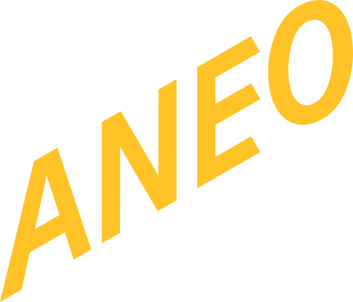

홈 > 브랜드 매거진 > Islington Square
Islington Square
이즐링턴 스퀘어(Islington Square)는 런던 어퍼 스트리트 인근 옛 로열 메일 우편 분류소 부지를 재개발한 리테일·레저·다이닝 복합 단지다. 플레이스 브랜딩은 스튜디오 Campbell Hay가 맡았다.
산업 분야 브랜드·비즈니스 · 공개 등급 편집 검수 · 브랜드 평가 4 ★
Is
Islington Square
한눈에 보는 브랜드
이즐링턴 스퀘어(Islington Square)는 런던 어퍼 스트리트 인근 옛 로열 메일 우편 분류소 부지를 재개발한 복합 단지로, 에드워드 시대 양식의 붉은 벽돌 건물들을 보존하며 주거와 더불어 리테일·다이닝·레저·문화 공간을 결합했다. 두 개의 대형 아케이드와 가로수길 형태의 공공 공간을 갖춘 새로운 런던의 리테일 목적지로 소개된다.
브랜드 아이덴티티
Campbell Hay는 부지 입구의 에드워드 양식 아치 구조를 핵심 모티프로 삼아, 주택 분양 중심이던 기존 브랜드를 장소와 경험을 내세우는 목적지 브랜드로 전환했다. 아치 형태를 로고타입과 사이니지의 맞춤형 글자꼴에 녹여 2D 그래픽과 3D 애니메이션을 오가도록 설계했고, 대담한 그래픽과 색상, 표현적인 모션 디자인을 통해 행사에 따라 변주되는 가변형 비주얼 시스템을 구축했다.
'Visit·Discover·Explore' 같은 행동 유도형 언어로 버벌 아이덴티티를 구성했으며, 구체적 컬러 값과 서체명은 공개 자료로 확인되지 않는다.
제품과 서비스
대표 제품과 서비스 정보는 편집 검수 후 공개됩니다.
사람들
타임라인
BI/CI 변천사
확인된 BI/CI 이미지가 아직 없습니다.
함께 읽을 브랜드
Br
Bruce Juice
브랜드·비즈니스 · 편집 검수Bruce JuiceBruce Juice는 2015년에 기록된 Designed by Marx 계열의 브랜드 아이덴티티 사례입니다. Marx Design가 아이덴티티 작업의 디자이너로 기...
Du
Dumbo
브랜드·비즈니스 · 편집 검수DumboDumbo는 2025년에 기록된 Designed by DNCO 계열의 브랜드 아이덴티티 사례입니다. DNCO가 아이덴티티 작업의 디자이너로 기록되어 있습니다. 공개...
Ev
Everybird
브랜드·비즈니스 · 편집 검수EverybirdEverybird는 2022년에 기록된 Designed by Marx 계열의 브랜드 아이덴티티 사례입니다. Marx Design가 아이덴티티 작업의 디자이너로 기록되...

브랜드·비즈니스 · 편집 검수AneoAneo는 2026년에 기록된 Recently added 계열의 브랜드 아이덴티티 사례입니다. Scandinavian Design Group가 아이덴티티 작업의 디자...
Ca
Cash Flow Vodka
브랜드·비즈니스 · 편집 검수Cash Flow VodkaCash Flow Vodka는 2025년에 기록된 Designed by Marx 계열의 브랜드 아이덴티티 사례입니다. Marx Design가 아이덴티티 작업의 디자이...
 브랜드·비즈니스 · 편집 검수Deezer
브랜드·비즈니스 · 편집 검수DeezerDeezer는 2023년에 기록된 Designed by Koto 계열의 브랜드 아이덴티티 사례입니다. Koto가 아이덴티티 작업의 디자이너로 기록되어 있습니다. 공개...
De
Departed Spirits
브랜드·비즈니스 · 편집 검수Departed SpiritsDeparted Spirits는 2023년에 기록된 Designed by Marx 계열의 브랜드 아이덴티티 사례입니다. Marx Design가 아이덴티티 작업의 디자...
 브랜드·비즈니스 · 편집 검수Jaffa
브랜드·비즈니스 · 편집 검수JaffaJaffa는 2024년에 기록된 Big Brands 계열의 브랜드 아이덴티티 사례입니다. Earthling Studio가 아이덴티티 작업의 디자이너로 기록되어 있습니...